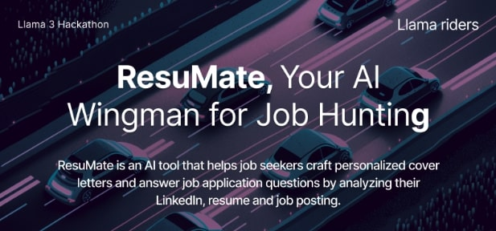
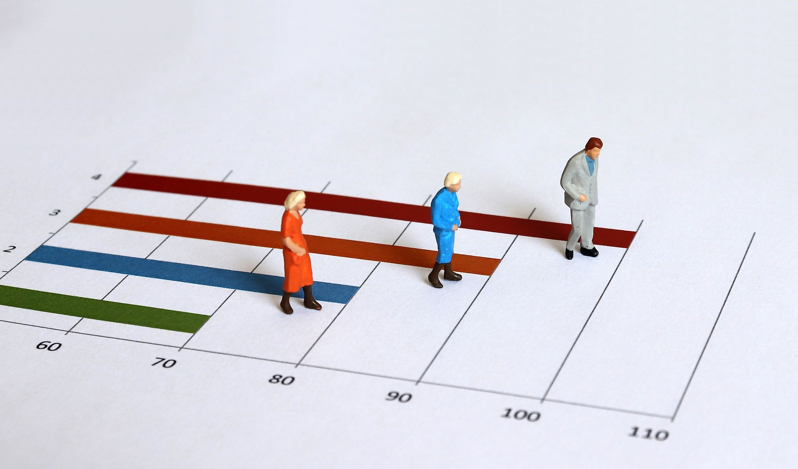

Maryam
Who Am I
Hi, I'm Maryam, an aspiring Data Scientist and Machine Learning Engineer. I’m fascinated by using AI to tackle real-world challenges and drive meaningful solutions through code and creativity.
- Innovative
- Passionate
- Creative
Projects
Exploring innovative solutions through diverse projects.

ResuMate
View Project
Life Expectancy Prediction
Predicting life expectancy using diverse health and socioeconomic factors, achieving a 96% R² score.
View Project
Pale Blue Dot Visualization Challenge
Designed impactful visualizations with Tableau for NASA's challenge, focused on SDG-2 Zero Hunger.
View DashboardExperience
-
Open-Source Contributor
Contributed to open-source projects at the GirlScript Summer of Code.
-
SWE Fellow at Headstarter
Developed 5+ AI apps using Next.js, OpenAI, Pinecone, and Stripe API. Aiming for 1,000 waitlist sign-ups, 1,000 account creations, or $1,000 in revenue.
Activities
-
Hackathons
Tackle challenges in hackathons, generating and implementing innovative solutions.
-
Coding
Sharpen problem-solving skills with LeetCode challenges.
-
Journaling
Capture thoughts and insights through daily journaling to stay organized.
-
Reading Books
Reading helps me understand the world better.
Articles
Check out my Medium profile for insightful articles on AI and Data Science
Visit Medium Profile